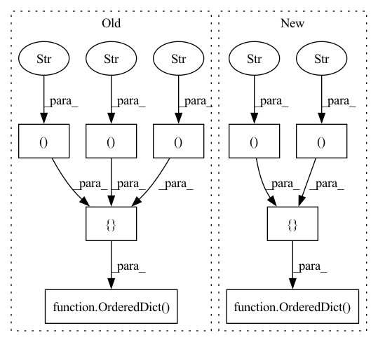

Pattern ID :9354

Before Change
// fake_Bgct =util.tensor2im(self.fake_Bgct,self.img_type)
ret_visuals = OrderedDict([("1.real_A", real_A),
("2.fake_A", fake_A),
("3.fake_A_idt", fake_A_idt),
("4.real_B", real_B),
("5.fake_B", fake_B),
("6.fake_B_idt", fake_B_idt),
//("fake_Bgct", fake_Bgct),
//("reinhard", reinhard),
//("reinhard2", reinhard2),
// ("real_A_hist", real_A_hist),
// ("real_B_hist", real_B_hist),
// ("fake_A_hist", fake_A_hist),
// ("fake_B_hist", fake_B_hist),
// ("fake_B1", fake_B1),
// ("fake_A1", fake_A1),
// ("fake_B2", fake_B2),
// ("fake_A2", fake_A2),
// ("fake_B3", fake_B3),
// ("fake_A3", fake_A3),
// ("fake_B4", fake_B4),
// ("fake_A4", fake_A4),
("7.Map_A", img_A_map),
("8.Map_B", img_B_map),
])
return ret_visuals
def get_current_visuals_test(self):
real_A = util.tensor2im(self.real_A,self.img_type)
After Change
img_A_map = util.tensor2im(self.input_A_Map,"rgb")
img_B_map = util.tensor2im(self.input_B_Map,"rgb")
ret_visuals = OrderedDict([("01_input", real_A),
("02_target", real_B),
("03_fake_B", fake_B),
("04_A_seg", img_A_map),
("05_B_seg", img_B_map),
])
return ret_visuals
In pattern: SUPERPATTERN
Frequency: 4
Non-data size: 9
Instances
Fragment ID: 33520276
Project Name: codeslake/color_transfer_histogram_analogy
Commit Name: 4c27b4681e9692dbcb6f034c4d140609187b0a5c
Time: 2020-05-31
Author: junyonglee@postech.ac.kr
File Name: models/colorhistogram_model.py
M Class Name: ColorHistogram_Model
N Class Name: ColorHistogram_Model
M Method Name: get_current_visuals(1)
N Method Name: get_current_visuals(1)
M Parent Class: BaseModel
N Parent Class: BaseModel
M File Name: models/colorhistogram_model.py
N File Name: models/colorhistogram_model.py
M Start Line: 403
M End Line: 461
N Start Line: 218
N End Line: 237
'>
Before Change
squeezed_channels = make_divisible(int(channels * ratio), 8)
gating_fn = gating_fn if gating_fn else _SE_GATING_FN
self.se = nn.Sequential(OrderedDict([
("pooling", nn.AdaptiveAvgPool2d((1, 1))),
("reduce", Conv2d1x1(channels, squeezed_channels, bias=True)),
("relu", inner_activation_fn(inplace=True)),
("expand", Conv2d1x1(squeezed_channels, channels, bias=True)),
("sigmoid", gating_fn()),
]))
def forward(self, x):
return x * self.se(x)
After Change
squeezed_channels = make_divisible(int(channels * ratio), _SE_DIVISOR)
gating_fn = gating_fn if gating_fn else _SE_GATING_FN
layers = OrderedDict([])
layers["pooling"] = nn.AdaptiveAvgPool2d((1, 1))
layers["reduce"] = Conv2d1x1(channels, squeezed_channels, bias=True)
if _SE_USE_NORM:
'>
Fragment ID: 33520235
Project Name: ffiirree/cv-models
Commit Name: e622b26dcf62b8ec88e80183f5ba0cef941cb223
Time: 2021-09-13
Author: ice_qi@163.com
File Name: models/core/blocks.py
M Class Name: SEBlock
N Class Name: SEBlock
M Method Name: __init__(5)
N Method Name: __init__(5)
M Parent Class: nn.Module
N Parent Class: nn.Module
M File Name: models/core/blocks.py
N File Name: models/core/blocks.py
M Start Line: 447
M End Line: 456
N Start Line: 462
N End Line: 475
'>
Before Change
img_A_map = util.tensor2im(self.input_A_Map,"rgb")
img_B_map = util.tensor2im(self.input_B_Map,"rgb")
ret_visuals = OrderedDict([("01_input", real_A),
("02_target", real_B),
("03_fake_B", fake_B),
("04_A_seg", img_A_map),
("05_B_seg", img_B_map),
])
return ret_visuals
After Change
def get_current_visuals(self):
ret_visuals = OrderedDict([("01_input", util.tensor2im(self.inp,self.img_type)),
("02_target", util.tensor2im(self.tar,self.img_type)),
("03_output", util.tensor2im(self.out,self.img_type))])
return ret_visuals
//////////////////////////////////////////////////////////////////////////////////////////////////////////////////////////////////////////////////////////////////////////////////////////////////////////////////////////////////////////////////////
'>
Fragment ID: 33520233
Project Name: codeslake/color_transfer_histogram_analogy
Commit Name: 7ac44b8cd12f9f7339b4998b7ca3240670b68c2f
Time: 2020-07-20
Author: junyonglee@postech.ac.kr
File Name: models/colorhistogram_model.py
M Class Name: ColorHistogram_Model
N Class Name: ColorHistogram_Model
M Method Name: get_current_visuals(1)
N Method Name: get_current_visuals(1)
M Parent Class: BaseModel
N Parent Class: BaseModel
M File Name: models/colorhistogram_model.py
N File Name: models/colorhistogram_model.py
M Start Line: 218
M End Line: 237
N Start Line: 152
N End Line: 154
'>
Before Change
conv: nn.Conv2d = _model.conv1
conv = nn.Conv2d(conv.in_channels, conv.out_channels,
kernel_size=3, stride=1, padding=1, bias=False)
self.features = nn.Sequential(OrderedDict([
("conv1", conv),
("bn1", _model.bn1), // nn.BatchNorm2d(64)
("relu", _model.relu), // nn.ReLU(inplace=True)
// nn.MaxPool2d(kernel_size=3, stride=2, padding=1)
// ("maxpool", _model.maxpool),
("layer1", _model.layer1),
("layer2", _model.layer2),
("layer3", _model.layer3),
("layer4", _model.layer4)
]))
else:
self.features = nn.Sequential(OrderedDict([
// nn.Conv2d(3, 64, kernel_size=7, stride=2, padding=3, bias=False)
After Change
def __init__(self, layer: int = 18, sub_type: str = "", **kwargs):
super().__init__(**kwargs)
layer = int(layer)
module_list: list[nn.Module] = []
if sub_type == "s":
_model = ResNetS(nclasses=self.num_classes)
module_list.append(("conv1", _model.conv1))
module_list.append(("bn1", _model.bn1))
module_list.append(("relu", nn.ReLU(inplace=True)))
self.classifier = nn.Sequential(OrderedDict([
("fc", _model.linear) // nn.Linear(512 * block.expansion, num_classes)
]))
else:
ModelClass: Callable[..., torchvision.models.ResNet] = getattr(torchvision.models, "resnet" + str(layer))
_model = ModelClass(num_classes=self.num_classes)
if sub_type == "comp":
conv1: nn.Conv2d = _model.conv1
_model.conv1 = nn.Conv2d(conv1.in_channels, conv1.out_channels,
kernel_size=3, stride=1, padding=1, bias=False)
module_list.append(("conv1", _model.conv1))
module_list.append(("bn1", _model.bn1))
module_list.append(("relu", _model.relu))
else:
module_list.append(("conv1", _model.conv1))
module_list.append(("bn1", _model.bn1))
module_list.append(("relu", _model.relu))
module_list.append(("maxpool", _model.maxpool))
self.pool = _model.avgpool // nn.AdaptiveAvgPool2d((1, 1))
self.classifier = nn.Sequential(OrderedDict([
("fc", _model.fc) // nn.Linear(512 * block.expansion, num_classes)
]))
// block.expansion = 1 if BasicBlock and 4 if Bottleneck
// ResNet 18,34 use BasicBlock, 50 and higher use Bottleneck
module_list.extend([("layer1", _model.layer1),
("layer2", _model.layer2),
("layer3", _model.layer3),
("layer4", _model.layer4)])
self.features = nn.Sequential(OrderedDict(module_list))
class ResNet(ImageModel):
'>
Fragment ID: 33520213
Project Name: ain-soph/trojanzoo
Commit Name: b51d677a2663de1e7bffed94a61a5b4c88074e76
Time: 2021-04-03
Author: ain-soph@live.com
File Name: trojanvision/models/resnet.py
M Class Name: _ResNet
N Class Name: _ResNet
M Method Name: __init__(3)
N Method Name: __init__(3)
M Parent Class: _ImageModel
N Parent Class: _ImageModel
M File Name: trojanvision/models/resnet.py
N File Name: trojanvision/models/resnet.py
M Start Line: 21
M End Line: 66
N Start Line: 20
N End Line: 54